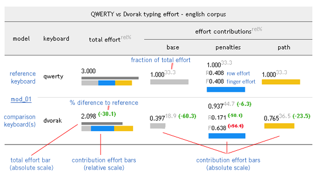

Carpalx はキーボード配列を最適化することで労力を減らし、手の負担を激減させる配列を作るプロジェクトです！


 完成した配列をダウンロードしてもいいし、自分でこのコードを使って新配列の探求へ挑むのもオツでしょう。
完成した配列をダウンロードしてもいいし、自分でこのコードを使って新配列の探求へ挑むのもオツでしょう。
 X11 用定義、あります！ Perry Thompson 氏が xkeyboard-config と kbd に Carpalx の配列を含めるパッチを送ってくれました。また、Carpalx の配列の X11 設定を提供してくれた Sven Hallberg 氏に感謝。Richard Gomes 氏には KDE/Gnome ユーザ向けのアーカイブを提供頂きました。
X11 用定義、あります！ Perry Thompson 氏が xkeyboard-config と kbd に Carpalx の配列を含めるパッチを送ってくれました。また、Carpalx の配列の X11 設定を提供してくれた Sven Hallberg 氏に感謝。Richard Gomes 氏には KDE/Gnome ユーザ向けのアーカイブを提供頂きました。
 好きな子には QWKRFY 配列か、ガチに最適化された QGMLWY 配列を勧めちゃおう。
好きな子には QWKRFY 配列か、ガチに最適化された QGMLWY 配列を勧めちゃおう。
 逆にムカつく奴にゃ TNWMLC 配列、これだね。ファッションになってる唯一の配列だし。
逆にムカつく奴にゃ TNWMLC 配列、これだね。ファッションになってる唯一の配列だし。
なんかアイデアあったら教えてくれよな。
≪訳注：メールアドレスは原文著者のもの。連絡するなら英語でね。≫
2016/08/16 — Carpalx で作られた配列をもとにしたフィリピン語用のエルゴノミクスキーボード配列が、国際学会 AHFE2016 で発表されました。
2016/04/18 — Perry Thompson 氏のおかげで、Carpalx の配列が freedesktop (xkeyboard-config パッケージ) と kbd に含まれるようになります。
2014/09/09 — De Correspondent 社と共同で、オランダ語用の新しい配列 De Correspondent を作りました。
2014/05/16 — Norman 配列の評価値を追加しました。この配列は 26 キー中の 14 キーを入れ替えて Colemak 同等の統計的性能を持ちます。詳細な統計データもあります。
2014/02/12 — abKey 配列の評価値を追加しました。ただしエルゴノミクス的側面の評価を試みてはいません。詳細な統計データもあります。
QWERTY Layout
ON THIS PAGE
This page introduces how the typing effort model is used to measure the typing effort of a specific keyboard layout. I also introduce the concept of model parameter sets - specific combinations of model parameters that apply different weights to components of the model.
QWERTY - by default
The majority of keyboards in English-speaking countries are arranged according to the QWERTY keyboard layout. Patented in 1868 by Christopher Sholes, this layout was designed to limit the speed of the typewriter operator to avoid the typebars from intertwining. If you ever used a manual typewriter, in which each key is linked to a lever bearing the corresponding character (a typebar), you have likely experienced the mechanical limitation of the design. Jamming on the keys is fun, but not productive if you need to get words on a page.
A small fraction of users have the comfort of using a Dvorak layout. Although many QWERTY users have heard of the Dvorak alternative and, in principle, appreciate the benefits of this layout, few have made the switch. The lack of adoption of Dvorak is due to the inherent difficulty and frustration in retraining muscle memory.

QWERTY - typing effort
Typing effort is broken down into three components: base effort (finger distance), penalties (hand, row and finger penalties) and stroke path (relative position of successive key strokes). The table below breaks down the typing effort for the QWERTY layout. The model parameters were chosen to make QWERTY effort components each 1.000, for easy comparison with other layouts.
| QWERTY typing effort - english corpus | |||||
|---|---|---|---|---|---|
| model | keyboard | total effortrel% | effort contributionsrel% | ||
| base | penalties | path | |||
| mod_01 | qwerty |
3.000
|
1.00033.3
|
1.00033.3
R0.408 F0.408 |
1.00033.3
|
The colored bars in the table represent in absolute and relative terms the total effort and individual effort contributions from base, penalty and path components. Below is an explanatory legend.

Both the absolute and relative values of the efforts in this table depend on the choice of model parameters. The values aren't therefore interesting by themselves, until you compared them with values for other layouts, such as Dvorak or optimized QWERTY. Comparison of efforts for different layouts can be made only for the same parameter set model.
Migrating from QWERTY
qwerty to dvorak
QWERTY is not an optimal layout (many argue it is not even a good layout) and there are compelling reasons to migrate away from QWERTY. Currently typists have two popular options: Dvorak and Colemak. The typing effort reduction in moving to Dvorak is 30%. Each effort component for Dvorak is lower. The finger component of the penalty is higher, due to Dvorak's increased use of the pinky (18% of keystrokes vs 10% on QWERTY are done by the pinky), which can be seen by a +56% increase in the finger penalty over QWERTY. If you have very weak pinkies, Dvorak may not be for you.
Dvorak certainly does a good job in lowering the base effort &mdash this is the component of effort that measures finger travel distance &mdash by moving frequently used keys, such as vowels, to home row. Because Dvorak vowels are serviced by the same hand, hand-alternation is increased (one-character hand run is 62% for Dvorak and 51% for QWERTY), a desirable property of an efficient layout.
| QWERTY vs Dvorak typing effort - english corpus | |||||
|---|---|---|---|---|---|
| model | keyboard | total effortrel% | effort contributionsrel% | ||
| base | penalties | path | |||
| mod_01 | qwerty |
3.000
|
1.00033.3
|
1.00033.3
R0.408 F0.408 |
1.00033.3
|
| dvorak |
2.098
(-30.1)
|
0.39718.9
(-60.3)
|
0.93744.7
(-6.3)
R0.171 (-58.1) F0.638 (+56.4) |
0.76536.5
(-23.5)
|
|
qwerty to colemak
The Colemak effort has an even lower effort than Dvorak and it achieves this by further lowering all three components of the effort. It significantly decreases the penalty component seen in Dvorak. Thus, although Colemak's finger penalty is still higher than QWERTY (again, through the increased use of the pinky), but overall penalty is lower by 24%.
| QWERTY vs Colemak typing effort - english corpus | |||||
|---|---|---|---|---|---|
| model | keyboard | total effortrel% | effort contributionsrel% | ||
| base | penalties | path | |||
| mod_01 | qwerty |
3.000
|
1.00033.3
|
1.00033.3
R0.408 F0.408 |
1.00033.3
|
| colemak |
1.842
(-38.6)
|
0.34418.7
(-65.6)
|
0.76341.4
(-23.7)
R0.158 (-61.3) F0.487 (+19.4) |
0.73539.9
(-26.5)
|
|
qwerty to qwkr**
If a committment to Dvorak seems too radical, you can adopt a partially modified layout which mitigates the major problems of QWERTY. This layout was identified by performing 5 key swaps on QWERTY that resulted in the largest reduction of typing effort. This layout belongs to the QWKR** layout family, which rival Dvorak. QWKR** layouts embody some the virtues of Dvorak without the radical adjustment to most key locations.
QWERTY - detailed statistics
In addition to evaluating components of typing effort (base, penalties and stroke path), Carpalx evaluates a keyboard for its finger, hand, and row usage frequency and runs (details).
Below is a table that details characteristics of typing an English training set on a QWERTY keyboard. It is noteworthy that QWERTY has a very high top-row usage frequency - 51% of the keystrokes use the top row and only 34% use the home row. QWERTY heavily favours the left hand, with a hand asymmetry of left-right=0.15. The weaker pinky and ring fingers make up 32% of the keystrokes, making QWERTY inefficient at using the stronger index and middle fingers.
The cumulative run distributions are best analyzed when compared with another keyboard layout such as Dvorak.
| carpalx effort optimization | keyboard name | statistics | effort | ||||||||||||||||||||||||||||||||||||||||||||||||||||||||||||||||||||||||||||||||||||||||||||||||||||||||
|---|---|---|---|---|---|---|---|---|---|---|---|---|---|---|---|---|---|---|---|---|---|---|---|---|---|---|---|---|---|---|---|---|---|---|---|---|---|---|---|---|---|---|---|---|---|---|---|---|---|---|---|---|---|---|---|---|---|---|---|---|---|---|---|---|---|---|---|---|---|---|---|---|---|---|---|---|---|---|---|---|---|---|---|---|---|---|---|---|---|---|---|---|---|---|---|---|---|---|---|---|---|---|---|---|---|---|---|
| rowh | rowb | hand asym | finger freq | cumulative run distribution | mod_01 | ||||||||||||||||||||||||||||||||||||||||||||||||||||||||||||||||||||||||||||||||||||||||||||||||||||||
| none |
QWERTY standard

QWERTYUIOP[]\
ASDFGHJKL;'
ZXCVBNM,./
|
0.34 | 0.15 | 0.15 | 0.10 0.21 0.27 0.42 |
|
3 | ||||||||||||||||||||||||||||||||||||||||||||||||||||||||||||||||||||||||||||||||||||||||||||||||||||
QWERTY - word difficulty
Using the typing effort model described in Carpalx - Typing Effort, I ranked 6-12 character words by their corresponding effort (effort is normalized to word length) using a dictionary of 480,000 words (/usr/share/dict/words, Red Hat 4 Enterprise). Below is a table that shows sets of words representing effort percentiles.
| QWERTY MOD_01 ENGLISH Word Efforts | ||
|---|---|---|
| average effort | percentile | wordeffort |
| 7.2 | hardest | pazazz8.2 pazazzes8.1 tazzas7.9 zaqaziq7.5 pizzazzes7.5 pizzazz7.4 bezazzes7.3 azazel7.2 zaqqum7.1 gozzan7.1 bezazz7.1 mazzard7.1 hazzan7.1 pizazzy7.0 pizazzes7.0 razzed7.0 piazzas7.0 razzes6.9 pappox6.9 pizzas6.9 ezzard6.8 poppas6.8 cozzes6.8 cazzie6.8 razzer6.8 |
| 3.9 | 90% | acrotomous3.9 ammonolysis3.9 antilopine3.9 cocteau3.9 overcommand3.9 parthenopean3.9 pentanol3.9 pointes3.9 pretaped3.9 trappistes3.9 unprovised3.9 |
| 3.6 | 80% | armipotent3.6 champine3.6 chemotropism3.6 dextrogyre3.6 mangroves3.6 pentacosane3.6 piquancies3.6 subtenure3.6 tormentress3.6 trentonian3.6 unproviding3.6 |
| 3.4 | 70% | brainerd3.4 brethel3.4 metamale3.4 nephelometer3.4 nicostratus3.4 overwrited3.4 pathways3.4 petrogenic3.4 rayonne3.4 scabies3.4 unbegotten3.4 |
| 3.3 | 60% | anthranil3.3 athonite3.3 declensional3.3 dirtbird3.3 kipling3.3 missample3.3 nephrogenous3.3 obsequiosity3.3 outfaced3.3 preached3.3 unrepugnant3.3 |
| 3.2 | 50% | bachelorhood3.2 embordering3.2 hemelytra3.2 ingent3.2 limnery3.2 octosyllabic3.2 pignorative3.2 sumphishly3.2 unclinched3.2 undermined3.2 urinated3.2 |
| 3.0 | 40% | accusers3.0 clincher3.0 disoperation3.0 drachen3.0 handcraft3.0 horripilant3.0 leegte3.0 mercantilely3.0 phyllite3.0 samaritans3.0 sillock3.0 |
| 2.9 | 30% | actuarial2.9 chapelled2.9 haurient2.9 lepisosteus2.9 letgame2.9 mesognathous2.9 racketeers2.9 redbelly2.9 sepulchred2.9 tensileness2.9 unroyalist2.9 |
| 2.7 | 20% | chorussed2.7 epistolise2.7 epistolist2.7 fluxer2.7 gooseflower2.7 hydrotype2.7 lasslorn2.7 micelles2.7 religionless2.7 schanz2.7 selene2.7 |
| 2.5 | 10% | alleges2.5 cedarkey2.5 ciderist2.5 drearies2.5 farron2.5 graford2.5 neodadaism2.5 niderings2.5 refuting2.5 turkestan2.5 unvulgarise2.5 |
| 0.9 | easiest | fiddly0.8 jiffle0.8 diddly0.8 dekker0.9 dukker0.9 kajdan0.9 dukkha0.9 duffle0.9 hadjis0.9 fluffy0.9 kakkak1.0 kiddle1.0 siddhi1.0 duffie1.0 fiddle1.0 fuddle1.0 fuffle1.0 fliffus1.0 ejidal1.0 koffka1.0 diddle1.0 duddle1.0 duffau1.0 khadis1.0 duffles1.0 kiddie1.0 |